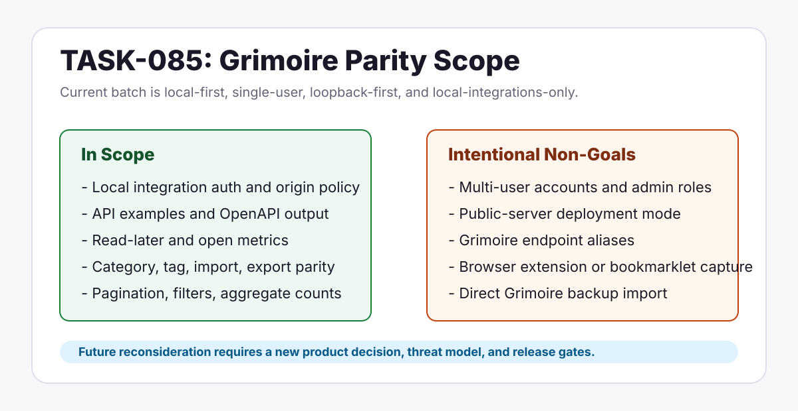

Little Imp Task Report
Grimoire Parity Scope And Non-Goals

Before
The parity report still described several Grimoire server features as missing or pending decisions even after the worksheet had refined the current batch scope.
Problem
Without explicit non-goals, release and roadmap readers could interpret the Grimoire parity batch as a promise to add multi-user accounts, public-server deployment, endpoint aliases, or browser-extension capture.
Changes Added
- Locked the parity report around a local-first, single-user, loopback-first, local-integration scope.
- Added a non-goals table with rationales and concrete reconsideration triggers.
- Updated roadmap, release notes, release decision, and release checklist language to prevent overbroad parity claims.
- Moved TASK-085 to done and aligned the task board and parity worksheet status.
Result
In Scope
Local integration security, API examples, bookmark read-later/open metrics, category/tag parity, import/export hardening, pagination, filters, and scale checks.
Out Of Scope
Multi-user/server mode, public-network exposure, Grimoire endpoint aliases, packaged browser-extension/bookmarklet clients, importance ratings, and direct Grimoire backup import.
Verification
- Checked the report for stale pending-decision language after the edit.
- Reviewed roadmap and release docs for unsupported Grimoire parity implications.
npm run docs:api:checkpassed.npm run checkpassed during final review.- A local link check over the edited markdown and task-report pages passed.
Implementation Notes
The task is documentation-only. No daemon route, frontend UI, schema, migration, installer, or release artifact behavior changed.
Files Changed
docs/parity/grimoire-feature-parity-report.mddocs/parity/grimoire-parity-task-proposals.mddocs/roadmap.mddocs/release-notes-v0.1.0-beta.mddocs/release-decision-v0.1.0-beta.mddocs/release-checklist.mdtasks/README.mdtasks/done/TASK-085-grimoire-parity-scope-and-non-goals.mddocs/task-reports/2026/05/2026-05-31-task-085-grimoire-parity-scope/index.html